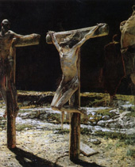

|
|
【何等有福】 |
|
1 How blest are the people possessing truce peace,
2 How blest are the people receiving God's grace,
3 How blest are the people desiring to learn,
4 How blest are the people believing God's word, Psalms 32 |
|
|
|
|
|
|
|


https://youtu.be/wB8jMsyrzNA
| Text: | How Blest Are the People |
| Paraphraser: | Barbara Woollett |
| Tune: | LOVE TO CHRIST |
| Composer (descant): | John F. Wilson |
| Short Name: | Barbara Woollett |
| Full Name: | Woollett, Barbara, 1937- |
| Birth Year: | 1937 |
Barbara Woollett--
Born on 30 January 1937 in Southampton, where she has lived ever since.
Educated at Sholing Secondary School for Girls; married David Woollett, an engineer; they have three children and six grandchildren.
She has been a full-time housewife and mother, a volunteer ward assistant in a large city hospital, and a mature student for a GCSE in Drama, as well as being active in a local amateur dramatic group.
She is a member of the Jubilate Group. She has written several hymn texts, Psalm versions and other verses.
Publications featuring her work include Church Family Worship (1988); Come, Rejoice (1989); Songs from the Psalms (1990); Psalms for Today (1990) which has four of her paraphrases; "Let's Praise" 2 (1994); "Sing Glory" (1999); and "Praise!" (2000).
Appearing in several books are her versions of Psalm 13, "How long, O Lord, will your forget an answer to my prayer"; and Psalm 84, "How lovely is your dwelling-place, O Lord most high". Among North American hymnals, The Worshiping Church (1990) has three of her texts and Worship and Rejoice (2001) has two, all of these from the Psalms.
--www.jubilate.co.uk/about
WOOLLETT, BARBARA
Author
b Merryoake, Southampton 1937. She left school at 16 to work in a chemist’s shop, 1953–60, and married David W (engineer) in 1960; they have 3 children and now several grandchildren. Her first hymn text, a version of Ps 147, was published by ‘Jubilate’ in 1984. She formerly belonged to Southampton’s Above Bar Church, taking part in choir events there; by 1996 she had written more than 20 hymn texts. From 1999 she no longer had any church affiliation; she retired in 2002, ‘still trying to make Jesus Christ known by my daily walk of faith in God’s grace’, living at Sholing, Southampton. Her version of Ps 13, How long, O Lord, will you forget features in several books including Spring Harvest collections Sing Glory (1999) and Sing Praise (2010). No.673.
Tune Information
| Title: | I LOVE THEE |
| Meter: | 11.11.11.11 |
| Incipit: | 51135 56531 23511 |
| Key: | E♭ Major |
| Source: | Ingall's Christian Harmony, 1805 |
| Copyright: | Public Domain |
| Short Name: | John F. Wilson |
| Full Name: | Wilson, John F., 1929- |
| Birth Year: | 1929 |
How Blest Are the People Barbara Woollett
Singing the Faith: 630
- Source:
- Words:
- Music:
- Metre:
- Verses:
Ideas for use
©
2017 iStockphoto LP
This is one of many hymns in Singing the Faith that paraphrase, or are directly
inspired by, individual psalms. (Indeed, StF
631, which follows, is Brian Doerksen’s paraphrase of Psalms 121. You may
also be interested to read what David Lee has to say about psalms: In
praise of psalms.)
Here, Barbara Woollett especially draws upon Psalm
13 and Psalm
22. (See below for more details.)
In worship, you may wish to consider reading one or both of these psalms before
or after singing this hymn. It can be helpful to hear (or sing) a passage of
scripture more than once in a service in order to more fully hear its messages.
We often pick up something new or fresh a ‘second time around’.
This may also be a helpful way to begin a discussion group – perhaps adding in
one or more translations of the Biblical psalm. Discussion questions arising
from the hymn/psalm might include:
- How familiar does the writer’s experience seem to you?
- Can you identify a particular occasion when God has felt absent to you? If so, how did you work through that experience?
- Barbara Woolett writes: “I find that all your ways are just” (v.3). In what ways do you see this in your community or in the world? Are there times when God’s justice seems lacking in the world – and, if so, how can we come to terms with this?
More information
This hymn, like a number of Barbara Woollett’s texts, is a psalm paraphrase: in
this case, Psalm
13, which begins “How long, O Lord? Will you forget me for ever?”
Verses 1 and 3 re-word other phrases from the psalm, describing the psalmist’s
feelings of intense despair – “a heart overwhelmed with grief” (v.1), and
thankful trust in God’s steadfast love (v.3). Also in verse 3, the psalmist’s “I
will sing to the Lord, / because he has dealt bountifully with me” may be
perceived in Barbara’s thankful “you forgive / with mercy from above”.
The final lines of verse 3 echo other psalms as well e.g. Psalm
22: 4-5 (which speaks of trust in God) and Psalms 119: 41 and
85: 7 – two of many psalms that exalt in God’s “unfailing” or “steadfast” love.

Crucifixion by Nikolay Ge (Licensed under Creative Commons)Verse 2 begins: “How long, O Lord, will you forsake / and leave me in this way?” This will more likely remind the singer of Psalm 22 which, in turn, is cried out by Jesus as he is being crucified: Mark 15: 34; Matthew 27: 46. The final lines verse 2 also echo Psalm 22.
Some readers have found suggestions of Psalm 15 in this text. However, that psalm – which sets out to answer the question: “O Lord, who may abide in your tent? / Who may dwell on your holy hill?” – focuses far more on the kind of lives God expects us to lead, and how we should relate to our neighbours. This emphasis is absent from Psalm 13 (though could be implicit in how the psalmist understands trust in God’s steadfast love to be worked out in practice).
What Barbara certainly omits from her paraphrase is any overt reference to the central section of Psalm 13, in which the writer envisions not only his or her enemies “prevailing” but also that, without the gift of God’s light, “the sleep of death” is the only likely outcome.
Nevertheless, Barbara’s hymn reminds us of the intensely personal nature of many of the psalms and the absolute conviction of God’s presence that underpins them. The cries of despair may themselves be seen as a measure of the writer’s faith – the belief that God is present even when seemingly absent; listening to us even when, as Barbara puts it, “your face is turned away from me.” (v.1) Indeed the very opening words, “How long . . .”, imply an ending: a time when our pain and concern will conclude and God’s love be felt “more nearly” (Day by day, dear Lord, StF 444 – the Prayer of St Richard of Chichester). Compare this with opening verse of William Cowper’s hymn:
O for a closer walk with God,
a calm and heavenly frame,
a light to shine upon the road
that leads me to the Lamb!
Barbara Woollett is a member of the Jubilate Group, a Christian publishing house founded by Michael Baughen in the 1960s, which administers copyright for more than sixty composers and writers. Her first hymn text, a version of Psalm 147, was published by Jubilate in 1984.
Barbara has always lived in Southampton. Over the years, she has combined being a full-time housewife and mother with volunteering as a hospital ward assistant, studying GCSE Drama as a mature student, and being active in local amateur dramatics. Since 1999 she has held no church affiliation but writes that she is “still trying to make Jesus Christ known by my daily walk of faith in God’s grace”.
詩篇 32
大衛的訓誨詩。
認罪與蒙赦
1過犯得赦免，
罪惡蒙遮蓋的人有福了！
2耶和華不算為有罪，
內心沒有詭詐的人有福了！
3我閉口不認罪的時候，
因終日呻吟而骨頭枯乾。
4黑夜白日，你的手壓在我身上沉重；
我的精力耗盡，如同夏天的乾旱。（細拉）
5我向你陳明我的罪，
不隱瞞我的惡。
我說：「我要向耶和華承認我的過犯」；
你就赦免我的罪惡。（細拉）
6為此，凡虔誠人都當趁你可尋找的時候向你禱告；
大水氾濫的時候，必不臨到他。
7你是我藏身之處，
你必保佑我脫離苦難，
以得救的歡呼四面環繞我。（細拉）
8我要教導你，指示你當行的路，
我要定睛在你身上勸戒你。
9你不可像那無知的騾馬，
須用嚼環韁繩勒住，
不然，牠就不會靠近你。
10惡人必多受苦楚；
惟獨倚靠耶和華的，必有慈愛四面環繞他。
11義人哪，你們應當靠耶和華歡喜快樂，
心�堨羲蔽漱H哪，你們都當歡呼。